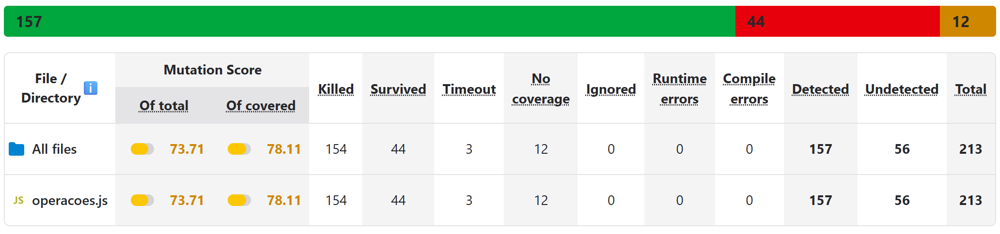
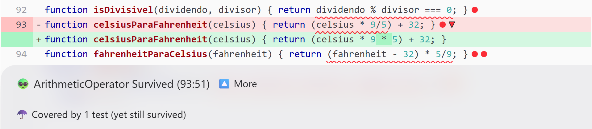
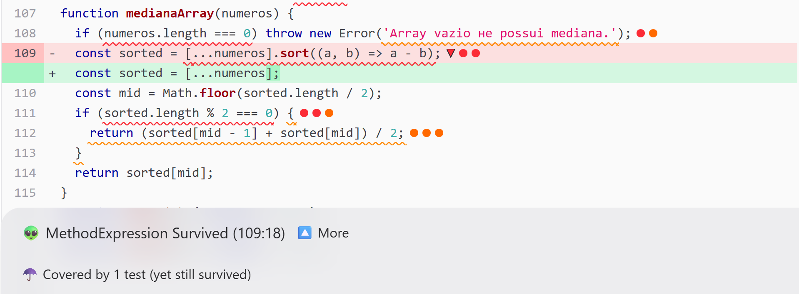
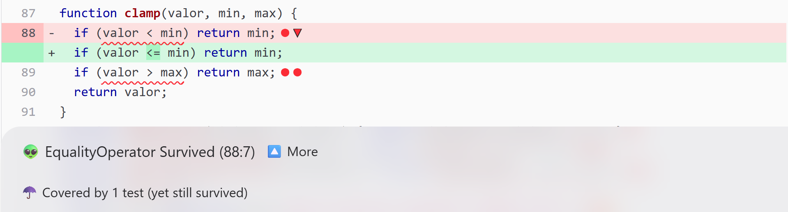
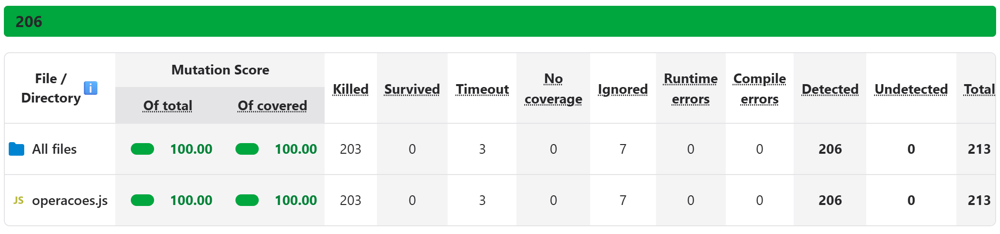

Este relatório avalia, com teste de mutação, a suíte de testes do projeto operacoes-mutante: uma biblioteca de 50 funções matemáticas em JavaScript, testada com Jest. O objetivo foi medir a eficácia real da suíte, entender por que cada mutante sobreviveu e escrever testes que os matassem.
Repositório: https://github.com/Cardosoooo/operacoes-mutante
Configuração: instalei @stryker-mutator/core e @stryker-mutator/jest-runner (versão 10.0) e rodei npx stryker init, escolhendo nenhum preset, Jest, os reporters html, clear-text e progress, npm e formato JSON. Nesta versão o arquivo gerado se chama stryker.config.json, e não stryker.conf.json, nome das versões antigas. Ele usa coverageAnalysis: "perTest", que roda para cada mutante só os testes que passam pelo trecho mutado. A análise roda com npm run mutate.
Os 50 testes originais passam, e a cobertura do Jest (npm test -- --coverage) é alta: 98,64% das linhas e 100% das funções, com 85,41% de statements e 58,82% de branches. A primeira execução do Stryker, porém, deu um mutation score de 73,71% (Figura 1).

A diferença entre 98,64% e 73,71% existe porque a cobertura mede o que roda, e não o que é verificado. Uma linha conta como coberta mesmo que nenhuma asserção dependa do resultado dela: os 44 sobreviventes estão todos em linhas cobertas, e os testes passaram por elas sem perceber a mudança. Os números menores de statements e de branches já davam uma pista: cada função era chamada uma vez, quase sempre pelo caminho feliz, sem passar pelos throw nem pelo lado falso das decisões. Os 56 mutantes não detectados se agrupam em poucas causas (Tabela 1).
| Fraqueza da suíte | Funções afetadas | Mutantes |
|---|---|---|
Funções booleanas testadas só no caso true | isPrimo (9), isPar, isImpar, isDivisivel, isMaiorQue, isMenorQue, isEqual | 18 |
Validações nunca exercitadas, ou toThrow() sem conferir a mensagem | divisao, raizQuadrada, fatorial, mediaArray, maximoArray, minimoArray, inverso, medianaArray | 16 |
| Entrada que não exige a lógica: array já ordenado e só de tamanho ímpar | medianaArray | 9 |
| Valores que anulam a operação (0 °C e 32 °F) | celsiusParaFahrenheit, fahrenheitParaCelsius | 4 |
| Valor sempre dentro do intervalo | clamp | 4 |
| Mutantes equivalentes (seção 5) | fatorial, produtoArray | 5 |
| Total | 56 | |
celsius * 9/5 virou celsius * 9 * 5
celsiusParaFahrenheit, coberto pelo teste 38 e mesmo assim vivo.O teste 38 converte 0 °C e espera 32 °F. Como o zero anula a multiplicação, 0 * 9/5, 0 * 9 * 5 e 0 / 9 / 5 dão todos 0, e o resultado continua 32. A linha está coberta, mas o valor escolhido torna o fator irrelevante: qualquer fórmula do tipo celsius * k + 32 passaria. Pelo mesmo motivo, o teste 39 (32 °F para 0 °C) não mata os dois mutantes de fahrenheitParaCelsius, porque 32 - 32 também dá 0.

.sort() e o teste 47 continuou passando.O Stryker trocou [...numeros].sort((a, b) => a - b) por [...numeros]. O único teste da mediana usa [1, 2, 3, 4, 5], que já está em ordem: ordenar ou não dá o mesmo array, e o elemento do meio continua 3. Pelo mesmo motivo sobreviveram as trocas do comparador por () => undefined e por a + b. Além disso, o array tem tamanho ímpar, então o ramo do array par (linha 112) nunca rodou: é a única linha descoberta no relatório de cobertura, e ela concentra 4 dos 12 mutantes sem cobertura. A função foi testada com uma entrada que não exige dela a parte difícil do trabalho.
valor < min virou valor <= min
clamp, coberto pelo teste 36.O teste 36 chama clamp(5, 0, 10), um valor dentro do intervalo. As duas condições são avaliadas, por isso a linha aparece coberta, mas os return min e return max nunca rodam; trocar qualquer um dos if por false não muda nada. O mutante da figura é o mais sutil: nem o teste de fronteira sugerido no enunciado, clamp(0, 0, 10), o mata, porque quando valor === min tanto faz devolver min ou valor, o número é o mesmo. A única entrada que separa as duas versões é o zero com sinal. No original, clamp(-0, 0, 10) devolve o próprio -0, pois -0 < 0 é falso; no mutante, -0 <= 0 é verdadeiro e a função devolve o limite 0. O toBe do Jest compara com Object.is, que diferencia 0 de -0, então essa diferença pode ser verificada.
Mantive os 50 testes originais e adicionei 27 em um novo bloco, “Testes que matam os mutantes sobreviventes”, agrupados por função (test/operacoes.test.js, linhas 78 a 215). Cada teste foi escrito para falhar com um mutante específico, e todos passam no código original (npm test: 77 aprovados). A Tabela 2 mostra os que matam os mutantes da seção 3.
| Mutantes | Novo teste | Por que mata |
|---|---|---|
Fatores de celsiusParaFahrenheit | celsiusParaFahrenheit(100) → 212 | Com 100 o fator importa: * 9 * 5 dá 4532 e / 9 / 5 dá 34,2. |
Fatores de fahrenheitParaCelsius | fahrenheitParaCelsius(212) → 100 | 212 - 32 = 180, e os mutantes dão 8100 e 4. |
| Ordenação da mediana | medianaArray([1, 10, 2]) → 2 | Fora de ordem: sem ordenar, o meio é 10. Também falharia com um sort() sem comparador, que ordena como texto. |
| Ramo do array par | medianaArray([8, 2, 6, 4]) → 5 | Faz a linha 112 rodar e confere a média dos dois do meio. |
if do clamp trocados por false | clamp(-5, 0, 10) → 0clamp(15, 0, 10) → 10 | Fazem os return min e return max rodarem. |
< → <= e > → >= no clamp | clamp(-0, 0, 10) → -0clamp(0, -10, -0) → 0 | Único caso em que devolver o limite é diferente de devolver o valor. |
Os demais testes seguem três padrões. O caso falso das funções booleanas, incluindo a igualdade, que separa > de >=: isMaiorQue(5, 5), isMenorQue(5, 5), isPar(7), isImpar(4), isDivisivel(10, 3) e isEqual(7, 8); no isPrimo, os compostos 4 e 9 obrigam o laço a achar um divisor, e o 1 separa n <= 1 de n < 1. As validações: a entrada inválida com toThrow e a mensagem esperada, o que também mata a troca da mensagem por texto vazio, e o valor válido na fronteira, como raizQuadrada(0) e fatorial(0), que mata a troca de n < 0 por n <= 0. Os casos vazios, como mediaArray([]) → 0: sem o if, a função faria 0 / 0 e devolveria NaN.
Os testes são eficazes porque cada um nasceu de um mutante concreto, foi conferido com uma nova execução do Stryker e verifica o resultado da função (valor ou exceção), e não detalhes de implementação. Uma observação: as mensagens de maximoArray, minimoArray e medianaArray têm “не” (cirílico) no lugar de “não”. Não alterei o código de produção; os testes conferem só o trecho final da mensagem, e o defeito fica registrado aqui.
| Execução | Score | Mortos | Timeout | Sobreviventes | Sem cobertura | Ignorados |
|---|---|---|---|---|---|---|
| Suíte original (50 testes) | 73,71% | 154 | 3 | 44 | 12 | 0 |
| Com os 27 testes novos | 97,65% | 205 | 3 | 5 | 0 | 0 |
| Final, com os equivalentes marcados | 100,00% | 203 | 3 | 0 | 0 | 7 |
Com os novos testes, 208 dos 213 mutantes passaram a ser detectados. Os 5 restantes são equivalentes: mudam o código sem mudar o comportamento, e nenhum teste consegue matá-los.
fatorial, linha 19 (4 mutantes): o if (n === 0 || n === 1) return 1 trocado por false, por && ou com um dos lados falso. Para 0 e 1, o laço for (let i = 2; i <= n; i++) não executa e a função devolve resultado = 1, o mesmo valor do retorno antecipado.produtoArray, linha 84 (1 mutante): sem o if, o reduce com valor inicial 1 também devolve 1 para o array vazio.Marquei essas duas linhas com // Stryker disable next-line <mutador>: motivo, o mecanismo do próprio Stryker para mutantes equivalentes. Eles passam a aparecer como Ignored e saem do cálculo, sem mudar o comportamento do código. Como o comentário vale para todos os mutantes daquele tipo na linha, ele também ignora 2 que já estavam mortos (as trocas da condição por true); por isso são 7 ignorados. Os 3 timeouts são laços infinitos (i++ → i-- no fatorial e duas mutações no while do mdc), que o Stryker conta como detectados. O score final é de 100% (206 de 206, Figura 5); sem os comentários, seria 97,65%, com os 5 restantes provados equivalentes. A cobertura chegou a 100% nas quatro métricas. Os equivalentes também apontam código redundante: os dois if poderiam sair, mas não os removi porque o escopo do trabalho é a suíte de testes.

A cobertura de 98,64% sugeria uma suíte quase completa, mas só garantia que o código rodava. O teste de mutação mostrou onde ela não verificava nada (um caso por função, valores que anulam a operação, entradas que não exigem a lógica) e transformou cada sobrevivente em um teste concreto a escrever: é um guia, e não só uma nota. Ele custa mais execução e exige análise humana para separar equivalentes de fraquezas reais, como no clamp, em que um mutante que parecia equivalente não era. Ainda assim, é a métrica que responde à pergunta que importa: se alguém introduzir um bug sutil, os testes percebem? Para esta biblioteca, agora percebem em toda mutação que altera o comportamento.